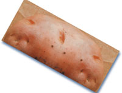

MOTHER'S VEGETABLE GARDEN
History and horticulture of the potato: nutritious, versatile, far from fattening, and easy to grow.
There's nothing small potatoes about the potato. It's the most eaten vegetable in the Western world and the fourth largest food crop-after wheat, rice, and corn-on earth. Nutritionally it yields more sustenance on less land in less time than any major staple. The potato's protein rates higher in quality than the soybean's. Just one medium-sized spud contains about half the daily adult requirement of vitamin C, as well as significant quantities of carbohydrates, calcium, protein, A and B vitamins, potassium, phosphorus, and iron-yet it's 99.9% fat free, and has only about 100 calories.
Horticulturally, the potato is a botanic blueblood, with a lineage longer than any aristocratic Homo sapien's . Nomadic Indians were gathering wild potatoes from the central Andes plateau, where the vegetable originated, before 6000 B.C. Archaeologists have found dried cultivated spuds, and pottery decorated with potato motifs, in Incan burial mounds dating to the second century. The potato was considered a spirit by the Incas. Some tribes even expressed time in units based on the potato's cooking time.
When sixteenth-century Spanish explorers brought the tuber back from their conquests, the spud enjoyed a short life as the most high-falutin' vegetable in Europe. It was even thought to possess exotic powers-not the least as an aphrodisiac. Naturally, word got around. English noblemen paid upwards of 250 pounds (money) for one pound (potatoes).
But the vegetable's uppity status lasted only as long as its novelty. By the 1800s, the spud had lost favor with the rich and was a staple among western Europe's peasants. Because of its nutritional wallop, the potato is credited with turning the tide of nineteenth-century Europe's horrific death rate-and with fostering a population boom that made possible the Industrial Revolution. Deaths from scurvy, rickets, and other malnutritionrelated diseases dropped sharply as potatoes supplanted wheat and rye in European diets. By growing the tuber instead of grain (which required at least twice the space to produce the same amount of food), peasants with little land could support larger families. In Ireland alone, where the potato became an economic cornerstone, the population soared to over 8 million by 1845-more than twice the present number-with a density greater than today's China.
Even the spud's shortcomings have influenced human history. When late blight, one of several fungus diseases to which the potato is susceptible, destroyed the crops in three successive years (1845 through 1847), a million Irish died of starvation, and a million more fled the country for America. Tens of thousands in other European countries also perished or joined the emigrating Irish. The potato famine sent a flood of talents and traditions and cultures to this country that helped carve the character of modern America.
Today, more Americans are eating more potatoes than ever: On the average, each of us consumes 120 pounds of spuds a year. Finally, after a long period of ill-deserved nutritional disgrace when the tuber was thought fattening (the real culprits were butter and sour cream), the potato is recognized for what it really is: a tasty, lowcalorie, fatfree nutritional powerhouse.
Because different kinds of potatoes prosper in different regions, it's usually best to plant whichever types are commonly grown in your area. Among the most widely distributed and popular early-maturing U.S. varieties are Irish Cobbler, Cherokee, Norland, and Norgold Russet. Mid- and full-season choices include Red Lasoda, Chippewa, Superior, Sebago, Katahdin, and Kennebec.
Regardless of the variety, it's a good idea to buy certified disease-free seed potatoes for planting each year. Your sense of economy and independence may tempt you to use potatoes you grew the season before, particularly if the harvest seemed healthy-but you will be taking a chance. You can't always tell by looking whether a potato has a disease that will be passed on to the plant it produces. Also, tubers don't necessarily reproduce true to themselves.
Don't try planting supermarket potatoes; they're usually treated with a chemical to keep them from sprouting.
Almost any soil will produce potatoes if it's well drained and not terribly heavy. For best yields, the earth should be mildly acid (try for a pH between 5.2 and 5.7) and thoroughly enriched with organic matter. Don't add compost or manure-even aged manure-just before planting time, or you'll "burn" the seed potatoes. It's better to add amendments the previous fall and let the soil mellow. Avoid using lime or wood ashes in your potato patch, too. Such "sweeteners" encourage a fungus called scab that makes for decidedly ugly (though still edible) potatoes.
In keeping with tradition, many gardeners (particularly those in the North) always plant potatoes on Good Friday or on St. Patrick's Day. But you can sow spuds anytime after the ground has thawed enough for you to work the soil. Two to four weeks before the average last frost date in your area is usually about right. Potatoes can't stand a hard frost, but will survive light spring "nips." Just keep in mind that tubers are most prolific in cool weather; 60° to 70°F is ideal. In the South, potatoes are planted in the fall and late winter and harvested before the onset of hot weather. In less temperate climes you should be able to plant and dig an early crop in time to replace it with a fall stand of spinach, kale, lettuce, or other cool-season cultivar. Get late potato varieties in the ground soon enough to mature a few weeks before the average first frost date.
You'll need about five to seven pounds of seed potatoes for every 100-foot row, which in turn should yield about three bushels (180 pounds) of eating spuds. Though some gardeners plant their seed potatoes whole, the more common practice is to cut the tubers into blocky pieces, each containing two or three eyes (shallow depressions in the skin). Too-large seed pieces produce undersize potatoes, and small pieces produce a scant harvest of extra-large spuds. The ideal is to strike a happy medium. Researchers say that 1 1/2- to 2-ounce chunks give the best return (you might want to weigh the first few pieces you cut to get a feel for the correct size). Let the chunks dry at least 24 hours before you plant them, to reduce the likelihood of rot.
If you're getting a late start-or want to go for an early harvest-try sprouting your seed potatoes: Two to four weeks before planting, spread the spuds out in a single layer in a warm (60°F or more) room where they'll get indirect light. They'll develop thick green shoots. Three days before you intend to put them in the ground, cut the potatoes into chunks that have one strong shoot apiece (rub off any small shoots).
Come planting time, hoe out furrows two to three feet apart and about six inches deep. Drop a seed potato in every 10 to 12 inches (shoot side up if you sprouted them), cover the pieces with five inches of soil, and tamp the earth down lightly with a hoe.
Most row gardeners "hill" their plants, gradually mounding soil up around, but not completely over, the developing greenery during the first several weeks of growth. Because potatoes grow above the parent tuber, the theory goes, billing provides room for more spuds to develop on the stem. Whether this is true or not, billing does, at least, keep the soil cultivated, and it protects plants from bending and breaking in heavy rain or wind. But stop billing after the plants bloom, to avoid damaging the developing tubers.
Another way to plant potatoes is the deepmulch method: Till or dig the intended patch, then push your seed potatoes into the soil, cut side down, until they're flush to the ground. The pieces should be spaced about 10 inches apart in all directions. Now cover the area with a foot or more of leaves, chopped cornstalks, or old hay. Add more mulch as necessary through the season. Then, come harvest time, just push the mulch aside to pluck your potatoes.
If you don't have enough space for a "real" garden, you can grow fresh spuds in bushel baskets or half-barrels. Just line the bottom of the container with a few inches of stones for drainage, pour in four or five inches of good soil, and lay a few seed potato pieces six to eight inches apart on top. Cover them with three or four more inches of soil and put the "later patch" in a sunny spot. Add more soil around the stems as the plants grow.
Potato plants don't like weeds. If you use the deep-mulch method, this won't be a problem. Likewise if you hill your potatoes. But when the plants bloom and it's time to stop hilling, you'll need to mulch the soil to keep weeds down.
Spuds are also fussy about water. They need a steady, even supply, particularly when the tubers are first developing-about six to ten weeks after planting. If the weather turns dry during that period, give the plants a good weekly soaking. Don't let them go for a long time without moisture and then suddenly drench them in water, though; the resulting abrupt growth will most likely crack the tubers, or make them knobby.
A long period of cool, moist weather can bring on early or late blight, the most common diseases that attack the potato. The first signs of early blight are small, brown, bull's eye patterns on the foliage. Late blight shows itself as watery spots on the leaves and a white, downy mildew on their undersides. Both maladies will eventually kill the foliage, then spread to the tubers and rot them. You may be able to keep blight from wiping out your entire crop if, at the first sign of infection, you dig up the affected specimens and, without shaking the leaves or otherwise giving the spores a chance to become airborne, burn the plants some distance away from the garden.
Scab, another common disease, shows itself as ugly lesions on your potatoes' skins. If it's widespread, chances are your soil is too alkaline. The fungus that causes scab can't live in dirt with a pH below 5.4, so take a soil test and-if necessary-add oak leaves, pine needles, or some other acidifier to your potato patch to bring the pH down.
Other contagions that frequently prey on the potato are ring rot, mosaic, and verticillium wilt. Ring rot starts as decay just beneath the tuber's skin, and spreads all the way through. Mosaic, true to its name, shows up as a mottled pattern on the leaves, which eventually wither and die. Verticillium wilt, a malady all too familiar to tomato growers, usually occurs late in the season. First the lower leaves turn yellow and drop off, and eventually the whole plant succumbs.
Fortunately, you can keep all these and most other diseases out of your potato patch by following the same simple prescription: Plant certified seed, rotate your nightshade crops each year, keep your garden free of infected plant residues, and choose varieties resistant to the diseases most prevalent in your area. (Irish Cobbler, Chippewa, Katahdin, and Kennebec are resistant to mosaic; Cherokee and Kennebec resist late blight; and Red Lasoda, Superior, and Russet Burbank resist scab.)
Of insect pests that favor the spud, none is more voracious than the Colorado potato beetle. The adult averages about 3/8" long and has a hard, broad, black-striped yellow shell. If you spy some, pick them off and check the undersides of the leaves for orangered egg masses. Squash all the beetles and eggs you find. Keep an eye out also for the beetle's larvae, which are humpbacked, dark red, grublike creatures with black heads. Squish them, too. Hand-picking potato beetles is not a job for the squeamish, but it's that or see your plants stripped clean. Bush beans grown between (or among) your rows of potatoes can also help deter the pest, as will basil or garlic sprays.
Flea beetles are tiny black or brown bugs that can quickly pepper your plants' leaves with small holes. They're especially attracted-and damaging-to young plants. Aphids, too, will suck the sap from tender potato leaves and weaken your crop. Discourage either insect with forceful water sprays, basil or garlic juice, or rotenone.
Underground pests-wireworms (click beetle larvae) and nematodes-can be particularly bothersome. Wireworms are thin and white, later turning brown, redbrown, or yellow depending on their species. They feed on tubers, often making it necessary to cut away affected parts or destroy the crop altogether. Most wireworms are a problem only in new gardens, and their population should diminish with increased cultivation. If you have wireworm problems season after season, however, you're dealing with an especially difficult species; you may have to move your potato patch. Nematodes are microscopic creatures that cause root knot, or galls, preventing water and nutrients from reaching the plants. The symptoms above ground, yellowing leaves and a withering plant, are sometimes mistaken for those of verticillium wilt. The knobby growths on the plants' roots, though, are a sure giveaway. Interplanting with marigolds, working plenty of organic matter into your soil, and rotating your crops can help prevent nematode problems.
Early-variety potatoes are ready to harvest when the plants are in full bloom-usually nine or ten weeks after planting. Carefully loosen the soil around a few plants and pull some spuds out to check for size. If they're big enough to suit you, you can harvest all your early spuds at once and plant a different crop-or you can take just a meal's worth at a time and simply replace the soil or mulch after each plundering. As long as you don't cut or bruise the remaining tubers, you won't hurt the plants and they'll keep right on producing. Don't forget, though, that early varieties generally don't store well and should be eaten by autumn.
Late potatoes destined for storage can be harvested anytime after the vines have died back or the tops have succumbed to frost. Just be sure to get the spuds out of the ground before the earth freezes, or you'll lose your crop. The best weather for digging late potatoes is a warm, dry, cloudy day following a period of no rain. Too much exposure to sunlight can turn spuds green, making them bitter (and even mildly toxic, from the solanine produced).
Use a digging fork or pointed shovel to lift the tubers free of the soil. Handle them carefully, gently removing clumps of dirt. Set any damaged potatoes aside for the evening meal; they won't keep. Place the others in a single layer, not touching and not in direct sun, on a dry surface such as newspaper. Leave them for a couple of hours, then turn them over to dry the bottoms. This process gets rid of surface moisture and helps toughen the spuds' skins.
Properly stored, your spuds should keep nicely through the winter and into spring. Don't be surprised, though, if your family eats them all before that. It seems the more you have, the more you use. Inevitably, one evening you go down to the cellar, reach into the bin, and pull out the last plump potatoes, firm as the day you dug them and still smelling of fresh earth.
Then you find yourself repeating a scene that has played over and over for centuries, perhaps since the first Inca emptied an ancient cache: "This year," you promise yourself as you carry the final few spuds back to the kitchen, "this year I'll plant more."
Potato, how do we love thee? In countless ways: boiled, baked, creamed, fried, chipped, scalloped, hashed, pureed, sauteed, au gratined-and more. It's possible to serve the versatile spud every day and never tire of it, simply because it lends itself to so many delicious preparations.
Here's one of our favorite potato recipes.
1 pound potatoes, peeled and diced
1 cup sliced leeks (white part only)
Salt and white pepper to taste
2 1/2 cups vegetable stock
1 small carrot
1 cup cream
1 1/2 cups milk
Combine potatoes and leeks in a saucepan with salt, pepper, and vegetable stock. Simmer over medium heat until potatoes are tender, 20 to 25 minutes. Purée soup in a blender until smooth. Chill in refrigerator. Peel carrot and cut in fine matchsticks. Blanch until tender in boiling, salted water. Drain and chill. When soup is thoroughly chilled, stir in cream and milk. Taste and add seasoning if desired. Garnish with carrot slivers. Serves 8. Per serving: 391 cal., 14 g pro., 41 g carbo., 19 g fat, 305 mg sodium. U.S. RDA: 45% vit. A, 19% vit. B 1 19% vit. B 2 23% vit. B 6 , 40% vit. C, 27% calcium, 19% niacin.
|
 ? PHILIPPE LOUIS HOUZE |
|
|